Blending modes in Gravit Designer let you achieve many effects, such as making an image darker or brighter, adding textures, removing colors, or bringing an underlying image forward.
The basics of blending modes
In Gravit Designer, you can choose a blending mode for an entire object (1), a Fill(2), and a Border(3). Conveniently, you can access blending modes from various places in the Gravit Designer interface.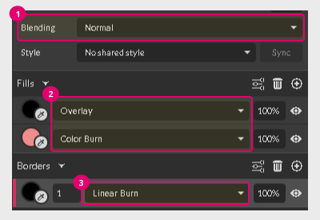
There are an infinite number of possible blending variations available for each fill or stroke that you apply to an object.
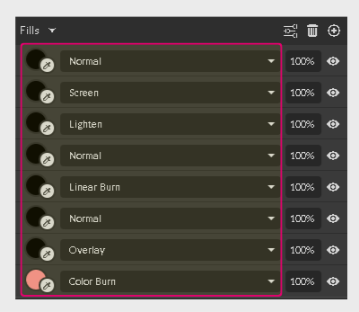
Blending modes are non-destructive, so you can reverse them at any time by using the Blending drop-down.
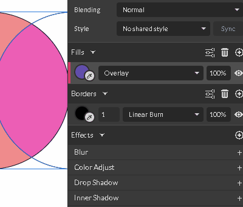
Blending modes are based on mathematical equations and calculate the color levels of both objects.
- The first object with the original color that you want to change is a base color.
- The second object with the blend mode applied is called a blend color.
- The result color is the effect of the objects blending.

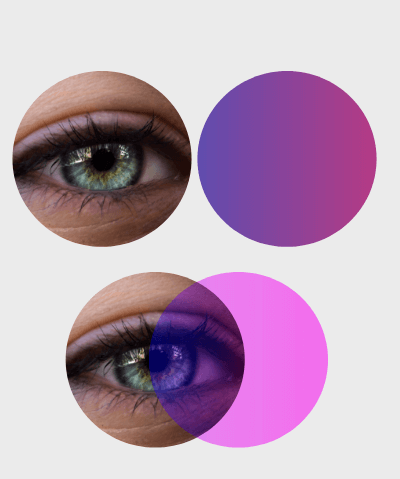
Most of the blending options have a neutral color, which has no effect on the base color. For example, applying the Multiply blending mode with a white blend color produces no result because white is the neutral color for the Multiply blending mode.
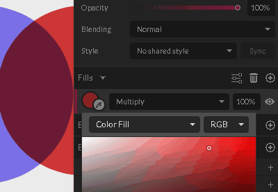
Neutral colors and blend mode groups
It’s easy to determine the neutral color for a blend mode because Gravit Designer combines blend modes with the same neutral color intro groups.
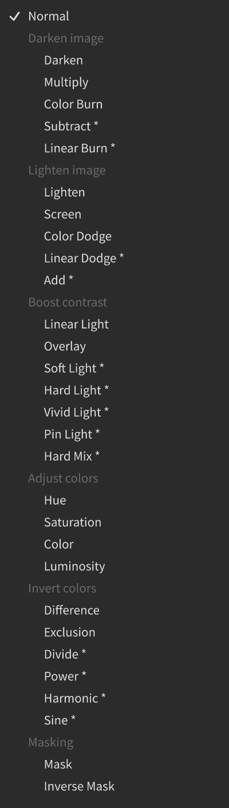
- The Darken image group has a neutral color of white. This group includes the Multiply, Darken, Color Burn, Linear Burn, and Subtract blend modes. The darker the blend color, the stronger the effect of the blend.
- The Lighten image group has a neutral color of black. This group includes the Lighten, Screen, Color Dodge, Linear Dodge, and Add blend modes. The lighter the blend color, the stronger the effect of the blend.
- The Boost contrast group has a neutral color of 50% grey. This group includes the Linear Light, Overlay, Soft Light, Hard Light, Vivid Light, Pin Light, and Hard Mix. These blend modes compare pixels with the mid-tone and then darken the darker pixels while lightening the lighter pixels.
- The Adjust colors group has no neutral color. This group includes the Hue, Saturation, Color, and Luminosity blend modes.
- The Invert colors group looks for variations between the base and blend layers to create the final blend. This group includes the Difference, Exclusion, Divide, Power, Harmonic, and Sine modes.
- The Masking group transforms a normal layer into something similar to a clipping mask but without actually placing one layer inside the other.
Multiply
Formula: Base x Blend
The Multiply blend mode multiplies the luminance levels of the blend color and the base color pixels. The resulting color is always darker.
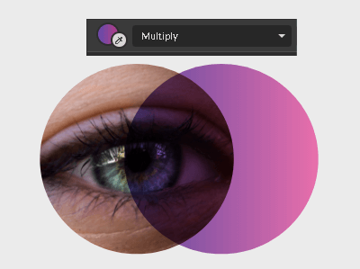
Because white has a luminosity of 1, it has no effect on the pixels of the base color. Black has a luminosity of 0, so the result color would always be 0.
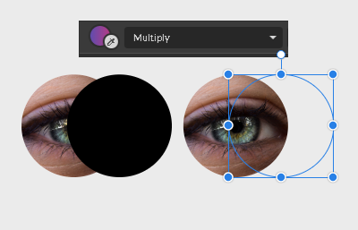
Screen
Formula: 1 – ( 1-Base ) x ( 1-Blend )
The Screen blend mode multiplies the reverse values of the luminosity of the blend color and the base color. Then it subtracts that value from the luminosity of white (1). The result is the opposite of the Multiply mode, so the brighter the blend color, the brighter the result color.
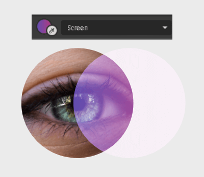
Black has no effect on the base color.
Overlay
The Overlay blend mode boosts the contrast of the base image. It uses 50% of gray as the threshold. If the pixels are brighter than 50%, it will brighten them even more and it would multiply the darker pixels.
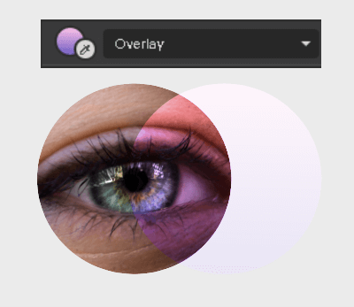
Darken
The Darken blend mode doesn’t blend colors. It makes a selection of the darkest pixels from both images, choosing either the base color or the blend color.
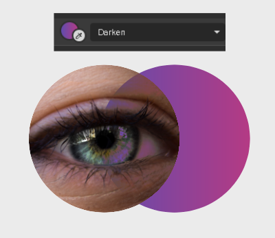
Lighten
The Lighten blend mode compares the brighter pixels in both colors. If the pixels of the base color are darker than those in the blend color, they would be replaced. Thus, it would remove the darker pixels.
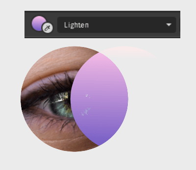
The result color is always lighter, but the selection and comparison of the pixels happens for each RGB channel separately.
Color Dodge
Formula: Blend / ( 1 – Base )
The Color Dodge blend mode lightens the bright pixels of the base color while for the dark pixels the result would be very moderate. The end result would be higher contrast.
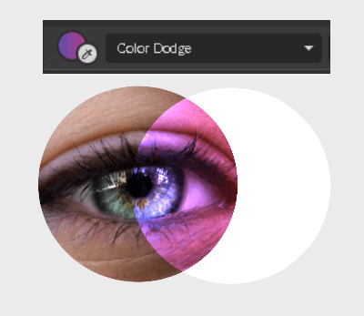
Color Burn
Formula: 1 – ( 1 – Blend ) / Base
The Color Burn blend mode divides the inverted blend color luminosity by the luminosity of the base color. Then it inverts the result. The darker the base color, the more it is used in the result color.
The result color is always darker with more contrast between light and dark pixels.
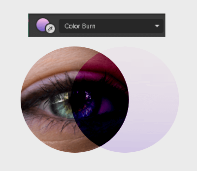
Hard Light
The Hard Light blend mode uses the color dodge formula for bright pixels and the color burn formula for darker pixels, boosting the contrast between them. Both formulas are at half strength.
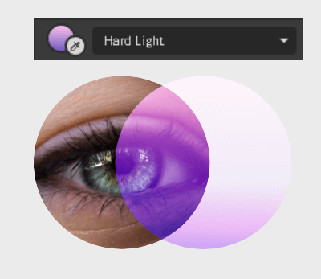
Soft Light
The Soft Light blend mode applies the screen blend mode formula for pixels that are brighter than 50% gray and multiplies the pixels that are darker.
Both formulas are used in the half strength, resulting in more soft and organic fusion.
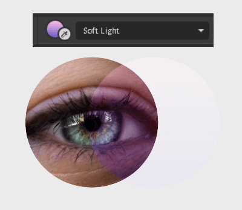
Difference
Formula: Brightest pixels – Darkest pixels
The Difference blend mode subtracts the darker pixels from the lighter pixels.

Black doesn’t have any impact on the color: Color – 0.
White makes 100% inversion of the color: 1 – Color.
Exclusion
Formula: Brightest pixels – Darkest pixels
The Exclusion blend mode uses the difference blend mode formula, but ignores the results close to zero, rendering them into the mid tones as if the result is 0.5. For similar colors, it produces gray instead of black, so the result in color is similar to those in the difference blend mode but less saturated.
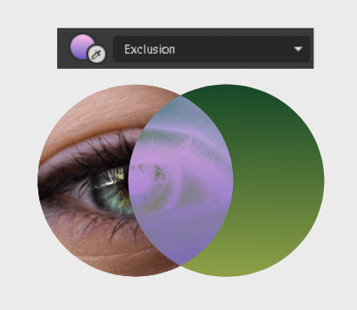
Luminosity: base color = 0.451, blend color = 0.450
Difference blend mode: 0.451 – 0.450 = 0.001. The result color is black
Exclusion blend mode: 0.451 – 0.450=0.001 =~ 0.5. The result is gray.
Hue
The Hue blend mode creates a result color with a hue of the blend layer combined with the luminance and saturation of the base color.
This is what we call “true recoloring” since the only hue is changed.

Saturation
The Saturation blend mode combines the saturation from the blend color with the hue and luminosity from the base color.
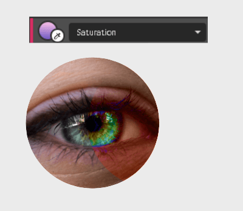
Color
The Color blend mode combines the hue and saturation from the blend color with the luminosity from the base color.
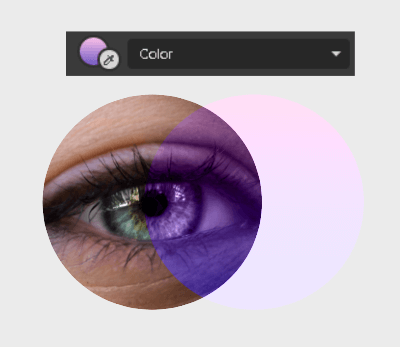
Luminosity
The Luminosity blend mode combines the luminosity from the blend color with the hue and saturation from the base color.
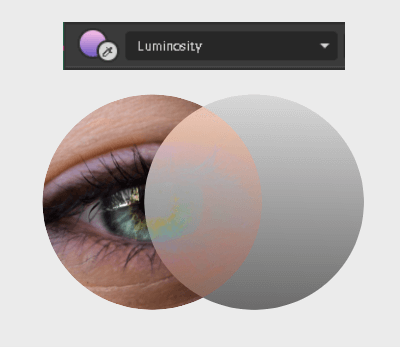
Linear Burn
Formula: Base + Blend – 1
The Linear Burn blend mode subtracts the luminosity of white from the sum of the luminosity of the base color and the luminosity of the blend color.
The result color is always darker than the base color, except if you are using white for the blend color.
The linear burn is darker than the color burn and multiply blend modes with low contrast and saturation because most of the negative and low values are rendered black.
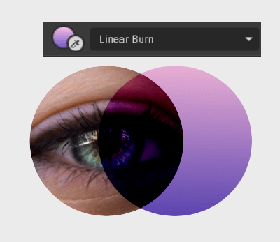
Linear Dodge
Formula: Base + Blend
The Linear Dodge blend mode adds of the luminosity of both colors. For bright colors, the sum might exceed 1, so it would be rendered into white.
The result color is usually very bright with low saturation and contrast.
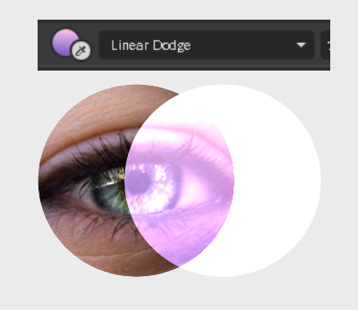
Linear Light
The Linear Light blend mode uses the linear dodge formula for pixels that are brighter than 50% gray, and the linear burn formula for darker pixels. Both equations are used in half strength.
The selections and calculations are based on the luminosity of the blend color.
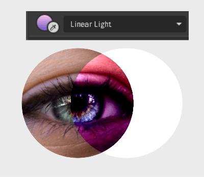
Vivid Light
The Vivid Light blend mode uses a combination of the color burn for darker pixels and color dodge for lighter pixels.
It selects pixels to burn or dodge based on the luminosity of pixels of the blend color. If pixels are lighter than 50% gray, it dodges them; if they are darker, it burns them. Both equations are applied in the half of the strength.
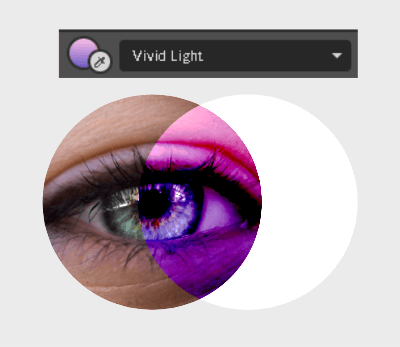
Pin Light
The Pin Light blend mode can darken or lighten images depending on the luminosity of the blend color.
If the luminosity of the blend color is more than 50% gray, it applies the algorithm of the lighten blend mode, and then replaces all the darker pixels of the base color with corresponding pixels of the blend color.
If the luminosity of the blend color is less than 50%, it applies the algorithm of the darken blend mode, replacing light pixels of the base color with the corresponding pixels of the blend color.

Divide
Formula: Blend / Base
The Divide blend mode divides the luminosity of the pixels of the blend color by the luminosity of the corresponding pixels of the base color.
It produces an extreme spotlight effect, lightening the blend color dramatically and producing a nearly white result color.
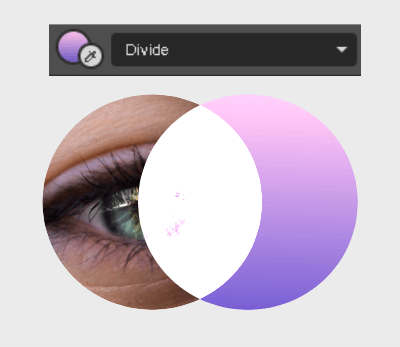
Add
Formula: Base + Blend
The Add blend mode sums up the luminosity values of both colors, resulting in the lighter color. Because the result color is always brighter, add blend mode is usually referred to as “plus light” mode.

Subtract
Formula: Blend – Base
The Subtract blend mode subtracts pixel values of the base color from the corresponding values of the blend color. if the values are negative, black is displayed. Resulting color is always darker.
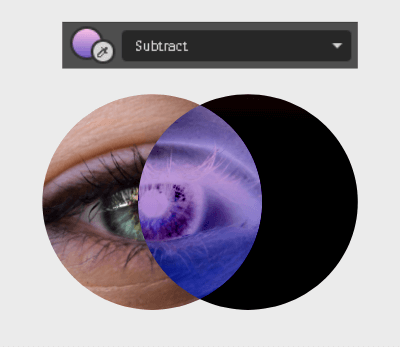
Hard Mix
The Hard Mix blend mode uses only eight colors to render a result color: red, green, magenta, blue, cyan, black, and white.
It goes through all RGB channels of the blend color and the base color, rounding the values of the luminosity either to 1 or 0:
- lightens the light pixels to white
- darkens the dark pixels to black
Then, it turns all 8 channels into the composite channel and scatters eight colors according to the composite channel luminosity values.
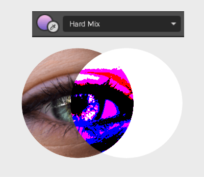
Unique blend modes
The following blend modes are unique to Gravit Designer. They are distinguished from conventional blend modes because they are based on more eloquent math equations, such as quadratic or harmonic mean.
Power 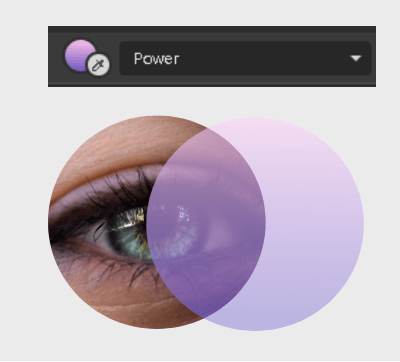
Formula: √ ( Base² + Blend² ) / 2
The Power blend mode uses a quadratic mean to blend colors. It is useful if you want the result color to be equidistant from the base and the blend colors.
It doesn’t have neutral colors. The black color makes the image darker, while white makes the image brighter.
Harmonic
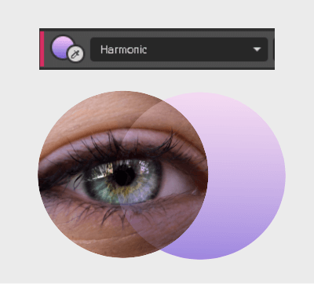
Formula: 2 / ( 1/Base + 1/Blend )
The Harmonic blend mode uses harmonic mean to blend colors. In this equation, two is divided by the sum of the reciprocal values of the blend color and the base color.
This blend mode doesn’t have neutral colors. White makes things whiter, while black doesn’t produce a result because you cannot divide by zero.
Less aggressive than the power blend mode, it can be used to add a subtle accent of one color over the other.
Sine
Formula: sin( Blend + Base ) x π/2

The first blend mode uses the trigonometric function for blending colors. The Sine blend mode is a sine of the sum of the blend and base colors, divided by two and multiplied by π (3.141828….).
The result color is very unique and can be used for special effects.
Black makes the base color appear brighter, while white inverts the base color.

The “Special 8” blend modes
There are eight blend modes that would respond differently to 40% of the Opacity and 40% of the Fill Opacity. This special group of blending modes gives you more options to explore creative effects. The “Special 8” blending modes includes:
- Color Burn
- Linear Burn
- Color Dodge
- Linear Dodge (Add)
- Vivid Light
- Linear Light
- Hard Mix
- Difference
For these blend modes, you can experiment with the Fill Opacity of the blend color and see how it changes the result color.
Mask blend modes
The mask blend modes transform a normal layer into something similar to a clipping mask but without actually placing one layer inside the other. The element itself is transformed into a mask.
Mask
The Mask mode clips everything under the selected element inside the boundaries of this element, including the whole background.
Inverse Mask
The Inverse Mask blend mode clips everything under the selected element outside the boundaries of this element, leaving the inner shape empty.
A very common use case of the mask and inverse mask blend modes is using a transparent PNG texture, with a few dots or scratches, and applying it over a design to produce a distressed look. This technique is often used Print On Demand T-shirt services.
Let’s take this design and combine it with a distressed texture:
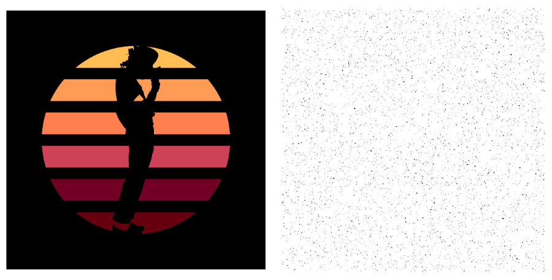
By placing the texture layer above the design and choosing the Mask blend mode, we get a much more interesting look to our design.
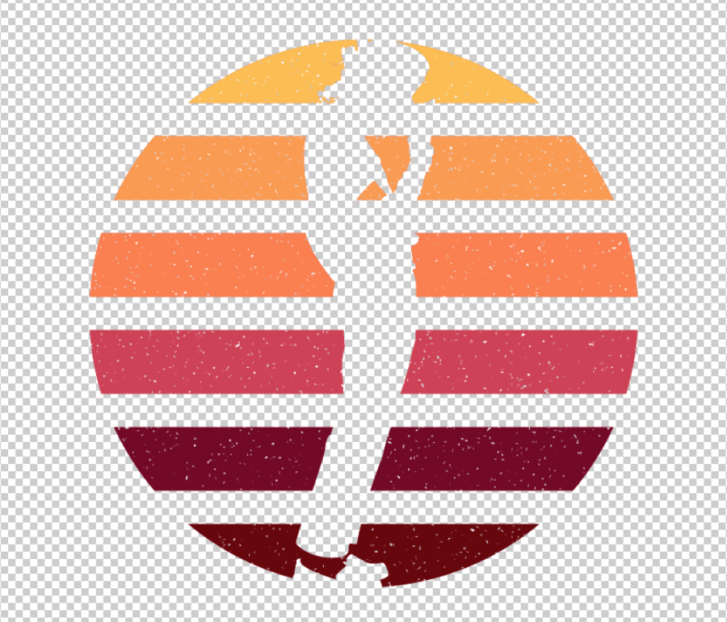
The same thing can be done by combining the same design with another kind of texture, this one with much less negative space, and then choosing the Inverse Mask blend mode:
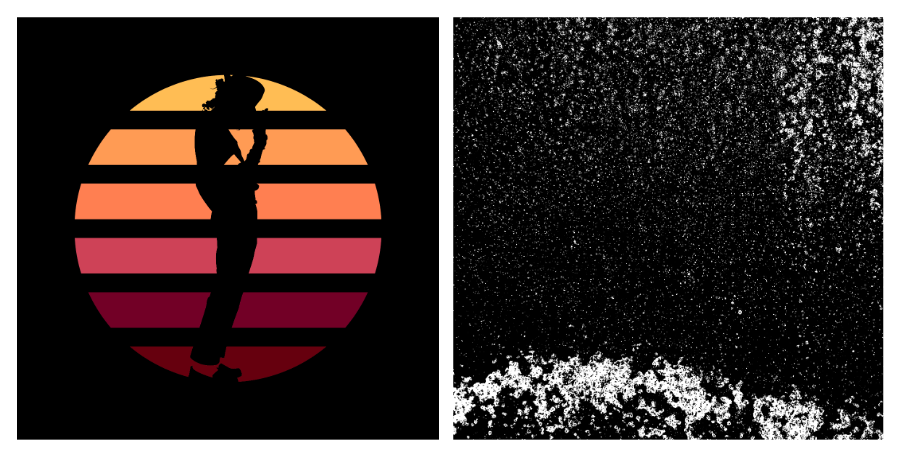
Place the texture layer above the design as well, but this time apply Inverse Mask:
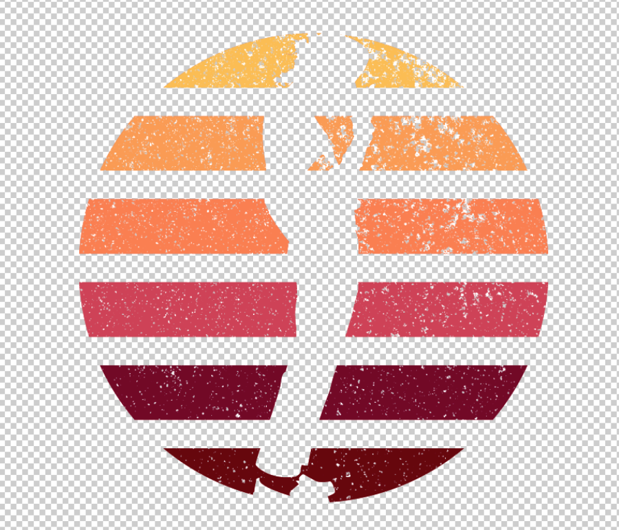
You can place the finished design, exported as a PNG image, over one of Gravit Designer’s Print on Demand templates to preview the finished product.
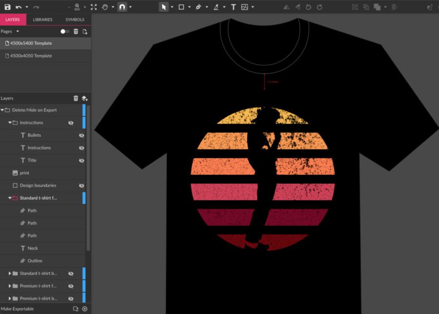